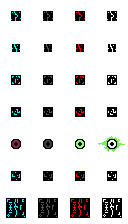
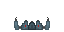
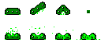
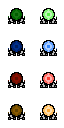
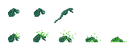
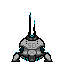
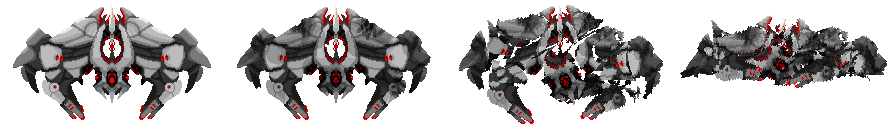

nobody can hear you`,
`In the void,
your screams are just static`, `Out here,
the only law is survival`, `The cosmos is a cold,
indifferent battlefield`, `Among the stars,
we are all just stardust waiting to be reborn`, `In the vastness of space,
even the smallest spark can ignite a war`, `Outer space is a playground for heroes and monsters`, `Beyond the known,
lies a galaxy of endless possibilities...
and infinite dangers`, `It is not immersive
if you haven't pressed F11 key` ]) ); ?>
your screams are just static`, `Out here,
the only law is survival`, `The cosmos is a cold,
indifferent battlefield`, `Among the stars,
we are all just stardust waiting to be reborn`, `In the vastness of space,
even the smallest spark can ignite a war`, `Outer space is a playground for heroes and monsters`, `Beyond the known,
lies a galaxy of endless possibilities...
and infinite dangers`, `It is not immersive
if you haven't pressed F11 key` ]) ); ?>
Back
Connecting to server ... / ... / ...
Beware of progress losing game bugs, these are the worst kind!
Messages are only visible to players who are using this server. In-game global messages can be sent by using Command Centres.
- Make a video of you playing Star Defenders and publish it to YouTube or any other social media
PS: Using Streamlabs could work for screen/window recording while DaVinci Resolve or Kdenlive could suit for post-recording video editing. You can also let us know in our Discord server if you plan any streaming events - we'd be happy to help!
- Contribute via Github, or even make a separate heavily customized game based on Star Defenders engine for your own community.
- Donate to developers, artists and musicians involved with this project!
"I'm the cause of all this. I polish things (visually, logic-wise and sound effects-wise) and I like to write complex/sensitive game logic. I'm an indie game developer living in Ukraine and I like to work on fun game projects."
Made things like network synchronization, world snapshot saving, crystals, cyan/blue/green/yellow cubes, viruses, quickie, default asps, both octopuses, erthal drone, cut droid, overlord, guanako, sand worms, hover, wall, doors, cables, basic weaponry, pathfinding, face crabs, mimics, weapon bench, bombs, lost effect, server connecting red long range teleports, roaches, devil shark, tutels, bad dogs, this new UI etc.
Booraz - Active in our Discord server
 Added slugs, grubs, falkoks, character AI, green base shielding unit, crystal combiner, velox flying mech, setr destroyer, drop pods, upgrade station, flesh, abomination, alien batteries, metal shards, workbench, land mines, barrels, excavator, rifts, shurg faction, council faction, erthal beacons/characters, tzyrg faction, extra sand worm variations, gibs etc.
Ghost581X - Active in our Discord server
Tweaks, rebalances, nerfs, weapons.
mrnat444 - Active in our Discord server
Gameplay featues, fixes, made amphids and small biters.
Molisson - Active in our Discord server
Fixes, optimizations.
xScripty - Active in our Discord server
Gameplay featues, crimson cube, cube spear.
AloneGuitar - Github
Faction tools.
MrMcShroom - Github - Active in our Discord server
Discord server management & technical suggestions.
These artists mostly worked on player skin variations.
HastySnow / LazyRain - Active in our Discord server
Skin variations, art for hover tank, cube overcharge cannon.
Flora
 High quality arts for base equipment and enemies, for example for command centre, upgrade station and Zektaron Dreadnought.
Silk1
Player skin variations, main menu Star Defender art.
darkstar1
Small crystal crab & crystal cluster arts.

Mrnat444
Big crystal crab art.
There is also a complete list of contributors and recent updates. Some of contributors are mentioned in the source code.
If you are a contributor - feel free to add a brief description of what you've contributed as well as correct any mistakes here.
Default config, larger world
Location: Canada, QuebecHosted by: MrMcShroom
Admins: Booraz
Low player capacity server
Location: Europe, UkraineHosted by: Eric Gurt
Admins: Eric Gurt
Default config
Location: USA, CaliforniaHosted by: Coolbuddy.com
Admins: Eric Gurt
It becomes available whenever you download project files and start server locally
Default config
Location: RussiaHosted by: prosuwanted
Check Github page of the project for more information on how you can host your own server.